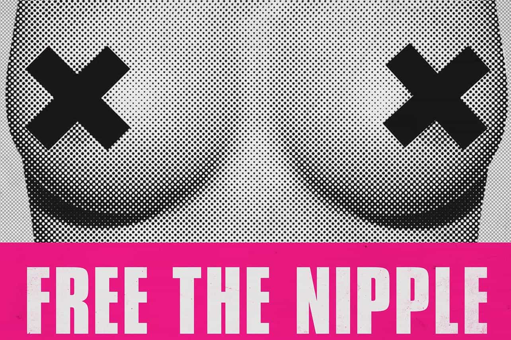

Touching a woman’s breasts without her consent is a textbook example of sexual assault (if sufficiently proven in a court). Yet a growing number of feminists argue that both female breasts and the nipples on them should be “desexualized.” If this rather moronic policy proposal is ever implemented, it would be entirely illogical and indeed unfair for any person touching a woman’s breasts to ever be accused, let alone convicted of sexual assault.
However, this is exactly what braindead feminists are arguing for en masse:

As for me, I am happy with the status quo: breasts are highly sexual body parts, more so than the male chest, and so laws should exist and be enforced to prevent these breasts being groped without permission. My only concern (and a very big one!) is with the evidentiary standards and procedures for proving that someone, almost always an accused man, actually did sexually assault a woman’s breasts. Other than that, laws as they exist now on paper are largely fine.
It is generally agreed that touching a man’s pecs will not result in you being arrested for sexual assault, whether you are male or female. Likewise, tapping someone on the very non-sexual shoulder is a universally accepted way of getting their attention. If certain categories of feminists wish to desexualize breasts and female nipples in line with the male chest and nipples, they need to accept the same outcomes as when we men are ever touched on the shoulder or the chest–there’s no sexual assault which can be alleged or prosecuted.
Feminist typists gotta type
Back when Cosmopolitan didn’t argue that breasts weren’t sexualized.
As we would expect, such high-brow publications as Cosmopolitan have shown an interest in “desexualizing” the nipple and therefore breasts. The stupidity of Eliza Thompson’s article would be hilarious if it were not for the tragic implications arguments like hers usually end up engendering. By arguing for some kind of perverse “equal” treatment towards men and women’s chests, Eliza is really advocating that women should have no recourse to sexual assault laws if they find their breasts forcibly touched or fondled by anyone.
This kind of feminist solipsism will no doubt try to bolster itself by claiming that women can sexualize and desexualize their breasts and nipples at will. When it comes to showing them off in public, their breasts will be entirely desexualized. But if someone touches these breasts, feminists will reserve the “right” to have them treated as sexually as genitalia would be. There is therefore not even a patina of solid ground on which to base such a ridiculous proposal as “Free the Nipple” or “Desexualize Breasts.” It is the feminine equivalent of a circle-jerk.
How many times do women touch your chest?
This fan has a better chance of touching Nicholas Cage’s chest than my chance of touching Miranda Kerr’s–and for good reason.
It happens all the time to me. Some recent examples in my own life include:
- Photos taken in a Bratislava nightclub. Across seven images, I spotted four girls with their hand dead-centre on my chest, palm open.
- I made a joke to a 24-year-old Slovenian birthday girl that 24 in female years is 52 in male years, so she better hurry up and have kids. She playfully pushed my chest and kept her hands there far longer than she should have.
- A female friend came up behind me in London and grabbed my chest from behind to surprise me.
There was no sexual assault in these cases because in legal terms the adult male chest is not sexualized, or at least not nearly as sexualized as the female chest. Desexualizing female breasts and nipples would require a similar non-observance of sexual assault laws for it to make any sense whatsoever. Combine my experiences with yours and these are exactly the things that feminists will have to accept happening to them and other women if they succeed in desexualizing whatever body part they want desexualized.
Of course, many men, myself included, will continue to treat breasts as the sexual body parts they are and behave ourselves accordingly. Others will not. If anything, “Free the Nipple” and related social retardisms represent a desire by feminists to deliberately inflict sexual harm and assault on other women. Who ever said women don’t hate each other?
Breasts are highly sexual–for the benefit of women let’s keep it that way

Her boobies are sexualized and for good reason.
Unless a mother is breastfeeding in public (and thank you to those women who are not childless, cat-lady feminists), there are powerful reasons why breasts are deliberately kept sexualized, both socially and in terms of the law.
“Equality” for male and female chests is not only a rejection of common sense, it will encourage actual sexual assault under the flimsy guise of gender non-discrimination. It is akin to proposing equal menstruation rights when men do not have periods.
Read More: One College’s Bizarre Approach To Sexual Assault